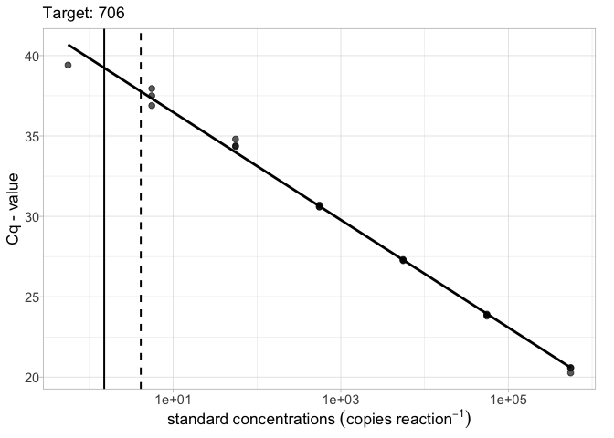
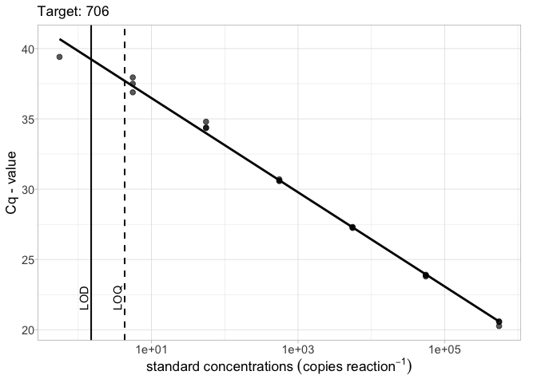
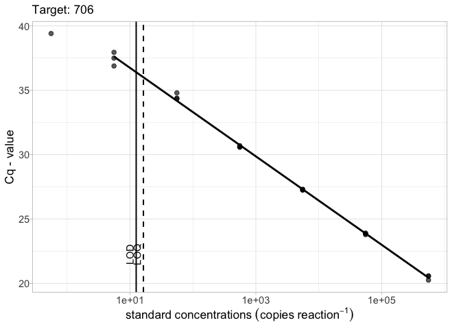

The goal of ednar is to provide a suite of easy to use functions to help with qPCR based targeted eDNA data analysis.
Installation
You can install the development version from GitHub with:
# install.packages("remotes") remotes::install_github("alexd106/ednar")
Example usage
Plotting standard curves
To plot a basic qPCR standard curve for a specified target:
library(ednar) calib_plot(calib_data, target = "706")

To include the the limit of detection (LOD) and optionally the limit of quantification (LOQ) (usually obtained using the calib_lod() function) on the plot use the lod = argument. LODs and LOQs can be supplied as either a data.frame object or as a vector.
# LOD as a vector lod_vec <- 1.5 calib_plot(calib_data, target = "706", lod = lod_vec)

# LOD and LOQ as a vector lod_vec <- c(1.5, 4.1) calib_plot(calib_data, target = "706", lod = lod_vec)

# LOD and LOQ as a tibble library(tibble) lod_data <- tibble(Target = "706", lod = 1.5, loq = 4.3) calib_plot(calib_data, target = "706", lod = lod_data)

The robust = TRUE argument will exclude standards with less than 50% detections when fitting the linear model
# LOD and LOQ as a tibble and robust = TRUE library(tibble) lod_data <- tibble(Target = "706", lod = 12.5, loq = 16.3) calib_plot(calib_data, target = "706", lod = lod_data, robust = TRUE)

Summary statistics from standard curve data
To generate a table of summary statistics (slope and intercept estimates, test statistics etc) using standard curve data for each ‘Target’ we can use the calib_stats() function with the argument type = "effects".
sum_stats <- calib_stats(calib_data, type = "effects") sum_stats # # A tibble: 6 x 6 # Target term estimate std.error statistic p.value # <fct> <chr> <dbl> <dbl> <dbl> <dbl> # 1 90720202 (Intercept) 39.9 0.357 112. 4.54e-22 # 2 90720202 log10(SQ) -3.40 0.119 -28.5 8.57e-14 # 3 10720201 (Intercept) 39.7 0.234 169. 1.19e-21 # 4 10720201 log10(SQ) -3.38 0.0734 -46.0 7.27e-15 # 5 706 (Intercept) 39.8 0.197 202. 3.53e-30 # 6 706 log10(SQ) -3.35 0.0552 -60.6 2.62e-21
To obtain the R^2 estimates use type = "r2"
sum_stats <- calib_stats(calib_data, type = "r2") sum_stats # # A tibble: 3 x 2 # Target r.squared # <fct> <dbl> # 1 90720202 0.983 # 2 10720201 0.994 # 3 706 0.995
Estimate LOD and LOQ from standard curve data
To obtain model based estimates of LOD and LOQ from the standard curve data from each ‘Target’ we can use the calib_lod() function. The calib_lod() function can automatically determine the ‘best’ model for LOQ by fitting linear, exponential decay, and up to 6^th order polynomial models and selecting the model with the lowest residual standard error. LOD estimates are obtained by fitting a series of dose response models using the drc package (see the drc::getMeanFunctions() function to see all possible models) and selecting the ‘best’ model based on log likelihood values, Akaike’s information criterion and residual variance.
qpcr_lod <- calib_lod(data = calib_data, threshold = 0.35, lod.fit = "best", loq.fit = "best") # [1] "WARNING: For 90720202, only 1 standard detected in the informative range (not 0% and not 100%). Therefore, the LoD model results will be less reliable." # Weibull (type 2) # (4 parameters) # In 'drc': W2.4 # # [1] "WARNING: For 10720201, only 1 standard detected in the informative range (not 0% and not 100%). Therefore, the LoD model results will be less reliable." # Weibull (type 2) # (4 parameters) # In 'drc': W2.4 # # [1] "WARNING: For 706, only 1 standard detected in the informative range (not 0% and not 100%). Therefore, the LoD model results will be less reliable." # Weibull (type 2) # (4 parameters) # In 'drc': W2.4
To display a summary of the LOD and LOQ estimates for each ‘Target’
qpcr_lod$assaySum # Assay R.squared Slope Intercept Low.95 LOD LOQ rep2.LOD # 1 90720202 0.9830248 -3.398584 39.93326 5.548 2.180560 11.000000 1.358718 # 2 10720201 0.9943614 -3.378033 39.69622 55.480 9.014319 9.014319 6.449130 # 3 706 0.9953952 -3.349245 39.82581 5.548 2.994413 8.000000 1.670059 # rep3.LOD rep4.LOD rep5.LOD rep8.LOD Efficiency LOD.model # 1 1.029598 0.8456490 0.7259391 0.5264376 0.9689750 W2.4 # 2 5.301822 4.6140218 4.1427325 3.3020967 0.9771073 W2.4 # 3 1.186418 0.9308752 0.7712566 0.5190739 0.9887252 W2.4
To display a summary for each of the standards and Targets
qpcr_lod$standardsSum # Standards Target Reps Detects Cq.mean Cq.sd Copy.CV Cq.CV # 1 5.548e+04 90720202 3 3 23.72667 0.09226231 0.06205315 0.06401680 # 2 5.548e+03 90720202 3 3 27.21967 0.07522189 0.05167608 0.05217530 # 3 5.548e+02 90720202 3 3 30.54967 0.10108083 0.06977608 0.07014996 # 4 5.548e+01 90720202 3 3 33.97567 0.09859175 0.06801555 0.06841846 # 5 5.548e+00 90720202 3 3 38.00800 1.53209269 0.80975638 1.44525589 # 6 5.548e-01 90720202 3 1 39.47000 NA NA NA # 7 5.548e-02 90720202 3 0 NaN NA NA NA # 8 5.548e+04 10720201 3 3 23.69967 0.01778576 0.01210139 0.01232862 # 9 5.548e+03 10720201 3 3 26.88167 0.18800621 0.13224413 0.13087120 # 10 5.548e+02 10720201 3 3 30.55533 0.13154594 0.09127219 0.09137054 # 11 5.548e+01 10720201 3 3 33.92967 0.11374240 0.07572288 0.07896290 # 12 5.548e+00 10720201 3 2 37.00750 1.13490638 0.70467061 0.92560975 # 13 5.548e-01 10720201 3 0 NaN NA NA NA # 14 5.548e-02 10720201 3 0 NaN NA NA NA # 15 5.548e+05 706 3 3 20.47000 0.18248288 0.12950912 0.12699510 # 16 5.548e+04 706 3 3 23.85667 0.06110101 0.04227123 0.04237099 # 17 5.548e+03 706 3 3 27.27667 0.03511885 0.02418331 0.02434614 # 18 5.548e+02 706 3 3 30.62667 0.06429101 0.04368325 0.04458526 # 19 5.548e+01 706 3 3 34.51000 0.25238859 0.16446173 0.17628953 # 20 5.548e+00 706 3 3 37.44667 0.53200877 0.36901392 0.38165929 # 21 5.548e-01 706 3 1 39.41000 NA NA NA # Rate # 1 1.0000000 # 2 1.0000000 # 3 1.0000000 # 4 1.0000000 # 5 1.0000000 # 6 0.3333333 # 7 0.0000000 # 8 1.0000000 # 9 1.0000000 # 10 1.0000000 # 11 1.0000000 # 12 0.6666667 # 13 0.0000000 # 14 0.0000000 # 15 1.0000000 # 16 1.0000000 # 17 1.0000000 # 18 1.0000000 # 19 1.0000000 # 20 1.0000000 # 21 0.3333333
With the calib_lod() function you can also fit specific models for both LOD and LOQ estimation. For example to estimate LOQ using an exponential decay model and LOD with a 4 parameter Weibull type II model.
qpcr_lod <- calib_lod(data = calib_data, threshold = 0.35, lod.fit = "W2.4", loq.fit = "decay") # Weibull (type 2) # (4 parameters) # In 'drc': W2.4 # # [1] "WARNING: For 90720202, only 1 standard detected in the informative range (not 0% and not 100%). Therefore, the LoD model results will be less reliable." # [1] "WARNING: For 10720201, only 1 standard detected in the informative range (not 0% and not 100%). Therefore, the LoD model results will be less reliable." # [1] "WARNING: For 706, only 1 standard detected in the informative range (not 0% and not 100%). Therefore, the LoD model results will be less reliable."